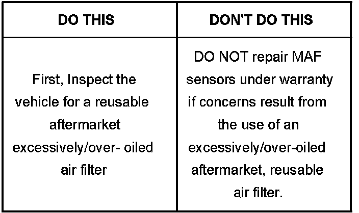

Engine, A/T - Shift/Driveability Concerns/MIL ON
Bulletin No.: 04-07-30-013BDate: February 01, 2007
INFORMATION
Subject:
Automatic Transmission Shift, Engine Driveability Concerns or Service Engine Soon (SES) Light On as a Result of the Use of an Excessively/Over-Oiled Aftermarket, Reusable Air Filter
Models:
2007 and Prior GM Cars and Light Duty Trucks
2007 and Prior Saturn Models
2003-2007 HUMMER H2
2006-2007 HUMMER H3
2005-2007 Saab 9-7X
Supercede:
This bulletin is being revised to add models and model years. Please discard Corporate Bulletin Number 04-07-30-013A (Section 07 - Transmission/Transaxle).

The use of an excessively/over-oiled aftermarket, reusable air filter may result in:
Service Engine Soon (SES) light on
Transmission shift concerns, slipping and damaged clutch(es) or band(s)
Engine driveability concerns, poor acceleration from a stop, limited engine RPM range
The oil that is used on these air filter elements may be transferred onto the Mass Air Flow (MAF) sensor causing contamination of the sensor. As a result, the Grams per Second (GPS) signal from the MAF may be low and any or all of the concerns listed above may occur.
When servicing a vehicle with any of these concerns, be sure to check for the presence of an aftermarket reusable, excessively/over-oiled air filter. The MAF, GPS reading should be compared to a like vehicle with an OEM air box and filter under the same driving conditions to verify the concern.
The use of an aftermarket reusable air filter DOES NOT void the vehicle's warranty.
If an aftermarket reusable air filter is used, technicians should inspect the MAF sensor element and the air induction hose for contamination of oil prior to making warranty repairs.
Transmission or engine driveability concerns (related to the MAF sensor being contaminated with oil) that are the result of the use of an aftermarket reusable, excessively/over-oiled air filter are not considered to be warrantable repair items.

Disclaimer